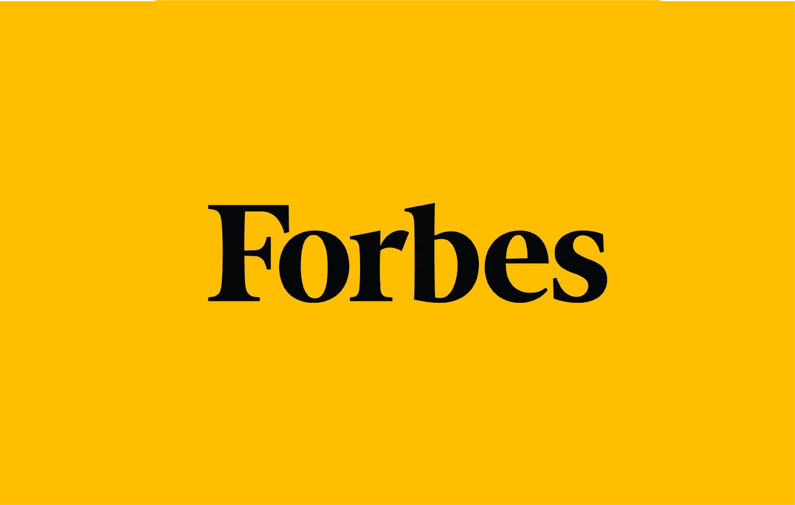
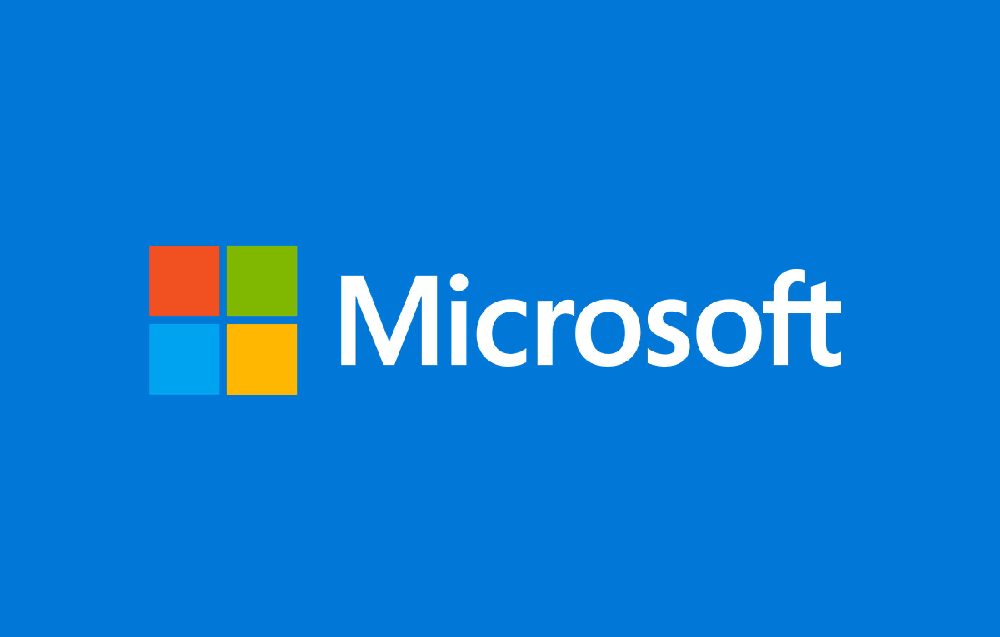
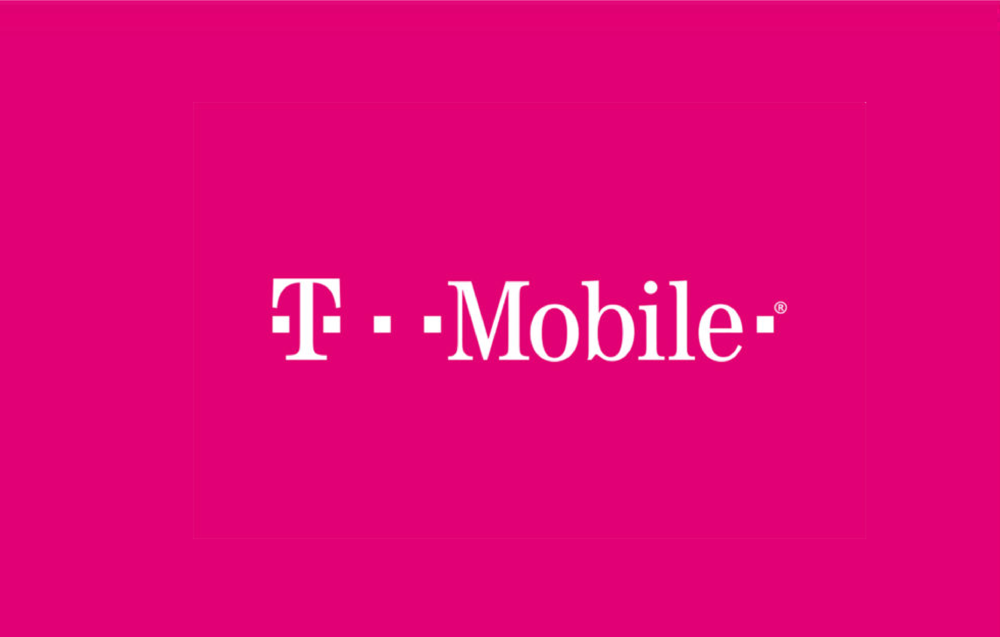
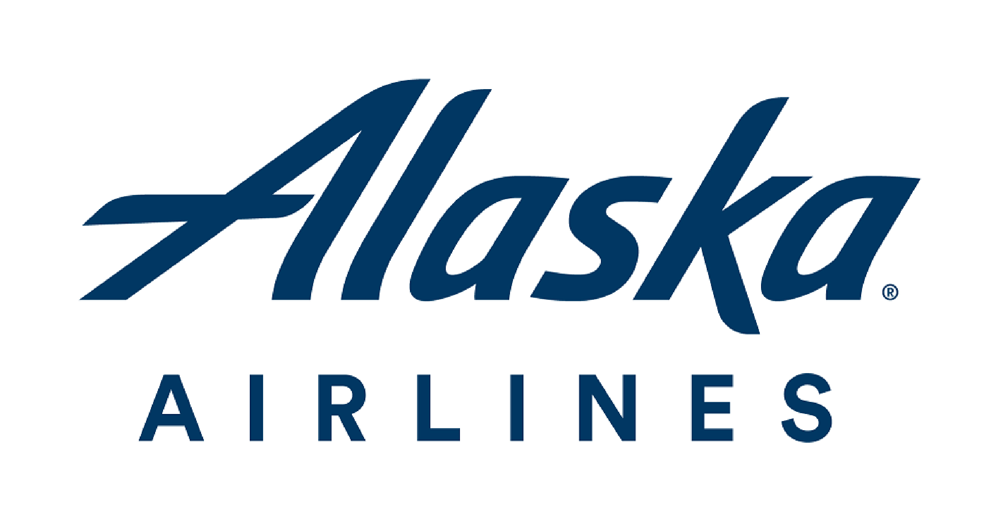

Hi, I'm Warisha
I'm a Human-Computer Interaction graduate from the University of Washington currently leading design and partnerships at HumanitarianTracker. I've worked for AT&T, Sofy.ai, Aerojet Rocketdyne and Integrus Architecture in addition to cofounding AbroadenSeattle. Each opportunity taught me new ways to galvanize users around the globe to be proactive about their future from a social and environmental lens by considering how people navigate through space - from physical space to white space.

2018, 2019
Forbes Under 30 Scholar
Recognized for using entrepreneurship to address global needs.
Forbes is a global media company that focuses on business, technology, entrepreneurship, leadership, and lifestyle. The Forbes brand reaches nearly 120 million people worldwide every month through several platforms. Every year, this brand recognizes 30 individuals under the age of 30 that are changing the game in twenty different industries by creating the Under 30 list. Then, Forbes hosts the Under 30 Summit as an open forum where the list makers take the stage to share their stories with more than 7,000 of the world’s top game changers - introducing unique experiences for various interest such as art, entertainment, science, economy, and many others. Through the Forbes Under 30 Scholars program, I was given a full scholarship to the event.
I design simple solutions to complex social and engineering challenges for galvanizing results in accessibility, sustainability, and user experience. Creating new technology allowed me to exchange skills and perspectives with impatient optimists to advocate for underrepresented populations and win a diversity and inclusion grant from T-Mobile, university hackathons and engineering competitions. I had only gotten a taste of the drive it takes to improve our tomorrow but was ready to go all in at the Under 30 Summit, which proved to be an unparalleled opportunity to collaborate with forward-thinking, entrepreneurial spirits who challenge each others’ ideas to strengthen solutions.
The first person I met was a list maker who connected people to venture capital. The people she connected just happened to be homeless. Not long after, I found myself talking about the championship my city won in the Women’s National Basketball Association with someone from the marketing team before considering sustainability efforts with another list maker - this time a twelve year old girl. I spent a lot of time with a traveler from Brazil who visits top universities and documents the lives of university students who bring their A game - and did I learn a lot. Speaking with over 300 people, a different perspective each time, yet my takeaway was simple: together, we can challenge each other to create seismic impact.

2018
Husky 100
Awarded for using my university experience for community impact
Each year, the University of Washington recognizes 100 undergraduate and graduate students from all three campuses who use their university experience as a platform to make an impact on their communities and around the globe.
My biggest takeaway from the award is the value of an interdisciplinary approach. If you have visited Red Square at the University of Washington, you likely have seen the large banner that reads, “what you care about can change the world.” Often times what we care about is not narrowed down to a singular topic or path. In reflecting on my own experiences and embracing the perspectives of my fellow recipients, change comes from the intersections of our eclectic interests.
With that being said, there is a common thread that connects us all to our various successes beyond the award criteria: an open mind, positive mindset, and grit. To me, the Husky 100 embodies it all.
To learn more about our collective experiences, visit: https://www.washington.edu/husky100

2017
Garden Innovation
Hackathon
First place in the Microsoft sponsored event as well as the "design" category
The Garden Innovation Challenge during Earth Week was the work of the Hackathon Series Committee, a partnership of seven student clubs and organizations led by the American Society of Mechanical Engineers.
Hacks were suggested in three possible areas: watering the garden, using electronic or internet-connected devices to monitor activity or soil conditions, and thinking of ways to best use the garden for education, exploration and collaboration.
Asking around about thoughts regarding the community garden, we learned about experiences avoiding the community garden due to not knowing how to harvest the food. My team and I applied user centered design principles coupled with an interdiciplinary lens to think about how mechanics, programming, and environmental science would come together in an educational, welcoming, and easy to use experience.
The result was an immersive experience featuring a compilation of designing an outdoor space with trellises that double as barriers for more seclusion from the open, code readers on plants that link to videos accessible on cell phones that show how to harvest, and picnic tables with umbrellas that double as solar powered charging ports to encourage people to utilize the space. We didn't have the time or resources to build the result, so we modeled it using garden materials and a 3D printer.

2016
Diversity and Inclusion
Grant
Pitched AbroadenSeattle and won the $5,000 grant and mentorshop
Our cross-disciplinary team members, all first-year students, Anchala Krishnan, Gabriela León, Leah Shin and Warisha Soomro, founded a phone application to expand social and community involvement with neighbors, local businesses, and organizations who share their culture with the community.
Abroaden received $5,000 plus coaching from T-Mobile executives at their headquarters to bring the project to fruition. T-Mobile also featured the project on its internal diversity and inclusion web page and created a video showcasing the project's progress over a year.
Looking back, I would do the development process differently but hey, we were freshman. I wouldn't trade this experience for the world because it's what led me to some awesome people and introduced me to oppertunities within design.

2015
Imagine Tomorrow
Design Competition
Designed an accessible method of generating biofuels at home
Alaska Airlines Imagine Tomorrow challenges participants to seek new ways to support the transition to sustainability. Following research on sustainability practices, my team and I combined technology, designs, and community engagement to mobilize behavior. It was an oppertunity to take what was in our head and explore how it could be implemented in the community.
My team constructed a sustainable, cyclic and affordable aquaponics system to cultivate aquaculture while incorporating food sources and plants to be harvested and put through a gasification process for the purpose of aviation fuel or providing small scale community power.
Version 4.1 - Updated April 2020